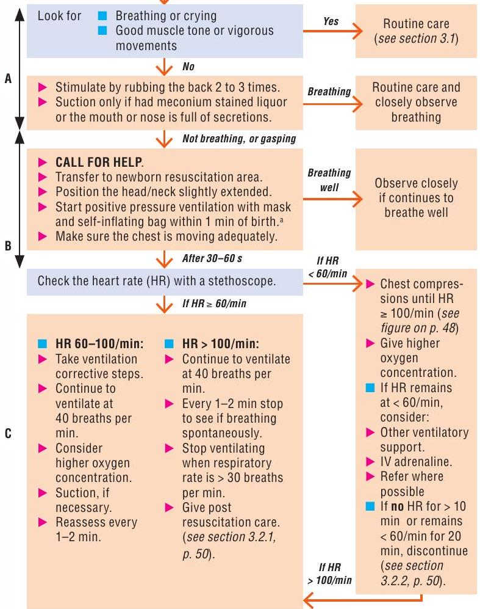
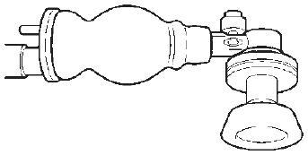
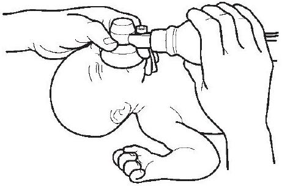
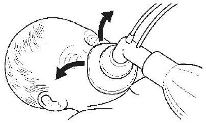

CHAPTER 3
Problems of the neonate and young infant
This chapter provides guidance on essential newborn care and the management of problems in neonates and young infants, from birth to 2 months of age. It includes neonatal resuscitation, the recognition and management of neonatal sepsis and other bacterial infections, and the management of preterm and low-birth-weight infants. A table giving the doses of commonly used drugs for neonates and young infants is included at the end of this chapter, which also lists the dosages for low-birth-weight and premature infants.
3.1 Essential newborn care at delivery
Most newborns require only simple supportive care at and after delivery.
- Dry the infant with a clean towel.
- Observe the infant while drying (see Chart 12).
- Maintain the infant in skin-to-skin contact position with the mother.
- Cover the infant to prevent heat loss.
- Clamp and cut the cord at least 1 min after birth.
- Encourage the mother to initiate breastfeeding within the first hour.
Skin-to-skin contact and early breastfeeding are the best ways to keep an infant warm and prevent hypoglycaemia. Term and low-birth-weight neonates weighing > 1200 g who do not have complications and are clinically stable should be put in skin-to-skin contact with the mother soon after birth after they have been dried thoroughly to prevent hypothermia.
3.2 Neonatal resuscitation
Resuscitation may be required for some infants, such as those born to mothers with chronic illness, to mothers who had a previous fetal or neonatal death, to mothers with pre-eclampsia, in multiple pregnancies, in preterm delivery, in abnormal presentation of the fetus, infants with a prolapsed cord, or after prolonged labour, rupture of membranes or meconium-stained liquor.
For many infants, resuscitation cannot be anticipated before delivery. Therefore:
- be prepared for resuscitation at every delivery,
- follow the assessment steps in Chart 12.
Chart 12. Neonatal resuscitation: Flow chart
a Positive pressure ventilation should be initiated with air for infants with gestation > 32 weeks. For very preterm infants, it is preferable to start with $30\%$ oxygen if possible. A and B are basic resuscitation steps
Chart 12. Neonatal resuscitation: Steps and process
There is no need to slap the infant; rubbing the back two or three times in addition to thorough drying is enough for stimulation.
A. Airway
- Keep the infant's head in a slightly extended position to open the airway.
- Do not suction routinely. Suction the airway if there is meconium-stained fluid and the infant is not crying and moving limbs. When the amniotic fluid is clear, suction only if the nose or mouth is full of secretions.
- Suck the mouth, nose and oropharynx by direct vision; do not suck right down the throat, as this can cause apnoea or bradycardia.
B. Breathing
- Choose a mask size that fits over the nose and mouth (see below): size 1 for normal-weight infant, size 0 for small ( $<2.5 \mathrm{~kg}$ ) infants
- Ventilate with bag and mask at 40-60 breaths/min.
- Make sure the chest moves up with each press on the bag; in a very small infant, make sure the chest does not move too much (danger of causing pneumothorax).
C. Circulation
Give chest compressions if the heart rate is < 60/min after 30-60 s of ventilation with adequate chest movements: 90 compressions coordinated with 30 breaths/min (three compressions: one breath every 2 s ).
- Place thumbs just below the line connecting the nipples on the sternum (see below).
- Compress one third the anterior-posterior diameter of the chest.
Chart 12. Neonatal resuscitation (Continued)
Neonatal self-inflating resuscitation bag with round mask
Fitting mask over face:
Ventilating a neonate with bag and mask
Pull the jaw forwards towards the mask with the third finger of the hand holding the mask. Do not hyperextend the neck.
Inadequate seal
If you hear air escaping from the mask, form a better seal. The commonest leak is between the nose and the cheeks.
3.2.1 Post resuscitation care
Infants who require resuscitation are at risk for deterioration after their vital signs have returned to normal. Once adequate ventilation and circulation has been established:
- Stop ventilation.
- Return to mother for skin-to-skin contact as soon as possible.
- Closely monitor breathing difficulties, signs of asphyxia and anticipate need for further care.
3.2.2 Cessation of resuscitation
It is appropriate to consider discontinuing after effective resuscitation efforts if:
- Infant is not breathing and heartbeat is not detectable beyond 10 min , stop resuscitation.
- If no spontaneous breathing and heart rate remains below $60 / \mathrm{min}$ after 20 min of effective resuscitation, discontinue active resuscitation.
Record the event and explain to the mother or parents that the infant has died. Give them the infant to hold if they so wish.
3.3 Routine care for all newborns after delivery
The routine care described below applies to all newborns, either born in hospital or born outside and brought to the hospital.
- Keep the baby in skin-to-skin contact on the mother's chest or at her side, in a warm, draught-free room.
- Start breastfeeding within the first hour as soon as the baby shows signs of readiness to feed.
- Let the infant breastfeed on demand if able to suck.
- Give IM vitamin K (phytomethadione) to all newborns.
- 1 ampoule ( $1 \mathrm{mg} / 0.5 \mathrm{ml}$ or $1 \mathrm{mg} / \mathrm{ml}$ ) once. (Do not use $10 \mathrm{mg} / \mathrm{ml}$ ampoule.)
- For preterm neonates, give $0.4 \mathrm{mg} / \mathrm{kg}$ IM (maximum dose, 1 mg ).
- Keep umbilical cord clean and dry.
- Apply antiseptic eye drops or ointment (e.g. tetracycline ointment) to both eyes once, according to national guidelines.
- Give oral polio, hepatitis B and bacille Calmette-Guérin (BCG) vaccines, depending on national guidelines.
3.4 Prevention of neonatal infections
Many early neonatal infections can be prevented by:
- avoiding unnecessary separation of the newborn from the mother e.g. baby unit
- hand-washing before delivering and handling the infant
- good basic hygiene and cleanliness during delivery (e.g. chlorhexidine cream for all maternal vaginal examinations)
- appropriate umbilical cord care
- appropriate eye care
Give prophylactic antibiotics only to neonates with documented risk factors for infection:
- Membranes ruptured > 18 h before delivery.
- Mother had fever $>38^{\circ} \mathrm{C}$ before delivery or during labour.
- Amniotic fluid was foul-smelling or purulent.
- Give IM or IV ampicillin and gentamicin for at least 2 days and reassess; continue treatment only if there are signs of sepsis (or a positive blood culture).
Many late neonatal infections are acquired in hospitals. These can be prevented by:
- exclusive breastfeeding
- strict procedures for hand-washing or alcohol hand rubs for all staff and for families before and after handling infants
- using Kangaroo mother care (see p. 59) and avoiding use of incubators for preterm infants. If an incubator is used, do not use water for humidification (where Pseudomonas will easily colonize) and ensure that it was thoroughly cleaned with an antiseptic.
- strict sterility for all procedures
- clean injection practices
- removing intravenous drips when they are no longer necessary
3.5 Management of infants with hypoxic ischaemic encephalopathy
Hypoxic ischaemic encephalopathy can result from lack of oxygen to vital organs before, during or immediately after birth. The initial treatment is effective resuscitation as above.
Problems during the days after birth:
- Convulsions: Treat with phenobarbital (see p. 53); ensure hypoglycaemia is not present (check blood glucose).
- Apnoea: common after severe birth asphyxia; sometimes associated with convulsions. Resuscitate with bag and mask, and manage with oxygen by nasal prongs.
- Inability to suck: Feed with expressed breast milk via a nasogastric tube. Avoid delayed emptying of the stomach, which may lead to regurgitation of feeds.
- Poor motor tone: floppy or with limb stiffening (spasticity)
Prognosis can be predicted by recovery of motor function and sucking ability. An infant who is normally active will usually do well. An infant who, within a week of birth, is still floppy or spastic, unresponsive and cannot suck has a severe brain injury and will do poorly. The prognosis is less grim for infants who have recovered some motor function and are beginning to suck. The situation should be sensitively discussed with parents throughout the time the infant is in hospital.
3.6 Danger signs in newborns and young infants
Neonates and young infants often present with non-specific symptoms and signs that indicate severe illness. These signs might be present at or after delivery or in a newborn presenting to hospital or develop during hospital stay. The aim of initial management of a neonate presenting with these signs is stabilization and preventing deterioration. The signs include:
- not feeding well
- convulsions
- drowsy or unconscious
- movement only when stimulated or no movement at all
- fast breathing (60 breaths per min)
- grunting
- severe chest indrawing
- raised temperature, $>38^{\circ} \mathrm{C}$
- hypothermia, $<35.5^{\circ} \mathrm{C}$
- central cyanosis
Emergency management of danger signs:
- Open and maintain airway. Give oxygen by nasal prongs if the young infant is cyanosed or in severe respiratory distress or hypoxaemic (oxygen saturation $\leq 90 \%$ ).
- Give bag and mask ventilation (p. 49) with oxygen (or room air if oxygen is not available) if there is apnoea, gasping or respiratory rate too slow (<20).
- Insert venous cannula.
- Give ampicillin (or penicillin) and gentamicin (see below).
- If drowsy, unconscious or convulsing, check blood glucose. If glucose $<2.2 \mathrm{mmol} / \mathrm{l}(<40 \mathrm{mg} / 100 \mathrm{ml})$, give $10 \%$ glucose at $2 \mathrm{ml} / \mathrm{kg}$ IV. Then give a sustained IV infusion of $5 \mathrm{ml} / \mathrm{kg}$ per h of 10% glucose for the next few days while oral feeds are built up.
If you cannot check blood glucose quickly, assume hypoglycaemia and give glucose IV. If you cannot insert an IV drip, give expressed breast milk or glucose through a nasogastric tube.
- Give phenobarbital if convulsing (see p. 53).
- Admit.
- Give vitamin K (if not given before).
- Monitor the infant frequently (see below).
3.7 Convulsions or fits
The commonest causes of neonatal convulsions include:
- hypoxic ischaemic encephalopathy (as a result of perinatal asphyxia)
- central nervous system infection
- hypoglycaemia
- hypocalcaemia
Treatment
Management of the neonate or young infant who is having a fit:
- Manage the airway and breathing.
- Ensure circulatory access.
- If hypoglycaemic, give glucose IV or nasogastrically ( $2 \mathrm{ml} / \mathrm{kg}$ of $10 \%$ glucose). If blood glucose cannot be measured, give empirical treatment with glucose.
- Treat convulsions with phenobarbital (loading dose $20 \mathrm{mg} / \mathrm{kg}$ IV). If convulsions persist, give further doses of phenobarbital $10 \mathrm{mg} / \mathrm{kg}$ up to a maximum of $40 \mathrm{mg} / \mathrm{kg}$. Watch for apnoea. Always have a bag-mask available. If needed, continue phenobarbital at a maintenance dose of $5 \mathrm{mg} / \mathrm{kg}$ per day.
- If hypocalcaemic, symptoms may settle if the infant is given $2 \mathrm{ml} / \mathrm{kg}$ of 10% calcium gluconate as a slow IV infusion, and continue with oral supplementation.
- Rule out central nervous system infection. Treat if present (see below).
3.8 Serious bacterial infection
Newborns with documented risk factors (see p. 51) are more likely to develop serious bacterial infection. All of the danger signs listed in section 3.6 are signs of serious bacterial infection, but there are others:
- severe jaundice
- severe abdominal distension
Localizing signs of infection are:
- signs of pneumonia (see section 4.2)
- many or severe skin pustules
- umbilical redness extending to the peri-umbilical skin
Treatment
Antibiotic therapy
Empirical antibiotics should be given to children with suspected neonatal sepsis.
- Admit to hospital.
- When possible, do a lumbar puncture and obtain blood cultures before starting antibiotics.
- For newborns with any signs of serious bacterial infection or sepsis, give ampicillin (or penicillin) and gentamicin as first-line antibiotic treatment (for dosages see pp. 69-72)
- If at greater risk of staphylococcus infection (extensive skin pustules, abscess or omphalitis in addition to signs of sepsis), give IV cloxacillin and gentamicin.
- The most serious bacterial infections in newborns should be treated with antibiotics for at least 7-10 days.
- If an infant is not improving within 2-3 days, change the antibiotic treatment or refer the infant for further management.
Other treatment
- If the infant is drowsy or unconscious, ensure that hypoglycaemia is not present (see p. 53); if it is, give $2 \mathrm{ml} / \mathrm{kg} 10\%$ glucose IV.
- Treat convulsions with phenobarbital (see p. 53).
- For management of pus draining from eyes, see p. 66 .
- If the child is from a malarious area and has fever, take a blood film to check for malaria. Neonatal malaria is very rare. If confirmed, treat with artesunate or quinine (see p. 158).
- For supportive care, see p. 56.
3.9 Meningitis
Clinical signs
Suspect meningitis if signs of serious bacterial infection (see section 3.8) are present, particularly if any one of the following is present:
The infant is:
- drowsy, lethargic or unconscious
- convulsing
- has a bulging fontanelle
- irritable
- has a high-pitched cry.
It is important to attempt lumbar puncture once the infant has been stabilized, ideally within 2 h of initiating antibiotic treatment, because it serves to confirm the diagnosis.
Treatment
- The first-line antibiotics are ampicillin and gentamicin for 3 weeks (see pp. 69-72).
- Alternatively, give a third-generation cephalosporin, such as ceftriaxone ( $50 \mathrm{mg} / \mathrm{kg}$ every 12 h if $<7$ days of age and $75 \mathrm{mg} / \mathrm{kg}$ after 1 week) or cefotaxime ( $50 \mathrm{mg} / \mathrm{kg}$ every 12 h if $<7$ days or every $6-8 \mathrm{~h}$ if $>7$ days of age), and gentamicin for 3 weeks.
- If there are signs of hypoxaemia, give oxygen (see p. 58).
- If the infant is drowsy or unconscious, ensure that hypoglycaemia is not present (see p. 53); if it is, give $2 \mathrm{ml} / \mathrm{kg} 10\%$ glucose IV.
- Treat convulsions (after ensuring they are not due to hypoglycaemia or hypoxaemia) with phenobarbital (see p. 53).
- Make regular checks for hypoglycaemia.
3.10 Supportive care for sick neonates
3.10.1 Thermal environment
- Keep the young infant dry and well wrapped.
- A hat can reduce heat loss. Keep the room warm (at least $25^{\circ} \mathrm{C}$ ). Keeping a young infant in close skin-to-skin contact with the mother (Kangaroo mother care, p. 59) for $24 \mathrm{~h} /$ day is an effective way of keeping the infant warm. An external heating device may be needed when the mother is asleep or too ill.
- Pay special attention to avoid chilling the infant during an examination or investigation.
- Check regularly that the infant's temperature is maintained in the range $36.5-37.5^{\circ} \mathrm{C}$ ( $97.7-99.5^{\circ} \mathrm{F}$ ) rectal or $36.0-37.0^{\circ} \mathrm{C}$ ( $96.8-98.6^{\circ} \mathrm{F}$ ) axillary. Use a low-reading thermometer to ensure detection of hypothermia.
3.10.2 Fluid management
Encourage the mother to breastfeed frequently to prevent hypoglycaemia. If the infant is unable to feed, give expressed breast milk by nasogastric tube.
- Withhold oral feeding if there is bowel obstruction, necrotizing enterocolitis, or the feeds are not tolerated, indicated e.g. by increasing abdominal distension or vomiting everything.
- Withhold oral feeding in the acute phase in infants who are lethargic, unconscious or having frequent convulsions.
If IV fluids are given, reduce the rate as the volume of oral or gastric milk feeds increases. IV fluids should ideally be given with an in-line burette to ensure the exact doses of fluids prescribed.
Increase the amount of fluid given over the first 3-5 days (total amount, oral plus IV).
| Day 1 | $60 \mathrm{ml} / \mathrm{kg}$ per day |
| Day 2 | $90 \mathrm{ml} / \mathrm{kg}$ per day |
| Day 3 | $120 \mathrm{ml} / \mathrm{kg}$ per day |
| Then increase to | $150 \mathrm{ml} / \mathrm{kg}$ per day |
When the infant tolerates oral feeds well, the amount of fluid might be increased to $180 \mathrm{ml} / \mathrm{kg}$ per day after some days. Be careful in giving parenteral IV fluids, which can quickly overhydrate a child. Do not exceed $100 \mathrm{ml} / \mathrm{kg}$ per day of IV fluids, unless the infant is dehydrated or under phototherapy or a radiant heater. This amount is the total fluid intake an infant needs, and oral intake must be taken into account when calculating IV rates.
- Give more fluid if the infant is under a radiant heater (1.2-1.5 times).
- During the first 2 days of life give $10 \%$ glucose infusion IV. Do not use IV glucose without sodium after the first 2 days of life. Suitable alternative IV fluids after the first 2 days are half normal saline and $5 \%$ dextrose.
Monitor the IV infusion very carefully (ideally through an in-line burette).
- Use a monitoring sheet.
- Calculate the drip rate.
- Check the drip rate and volume infused every hour.
- Weigh the infant daily.
- Watch for facial swelling: if this occurs, reduce the IV fluid to a minimum or take out the IV line. Introduce breastfeeding or milk feeding by orogastric or nasogastric tube as soon as it is safe to do so.
3.10.3 Oxygen therapy
- Give oxygen to neonates or young infants with any of the following:
- central cyanosis or gasping
- grunting with every breath
- difficulty in feeding due to respiratory distress
- severe lower chest wall indrawing
- head nodding (i.e. a nodding movement of the head, synchronous with the respiration and indicating severe respiratory distress)
Use a pulse oximeter to guide oxygen therapy. Oxygen should be given if the oxygen saturation is $\leq 90 \%$, and the oxygen flow should be regulated to maintain saturation of > 90%. Oxygen can be discontinued once the infant can maintain saturation > 90% in room air.
Nasal prongs are the preferred method for delivering oxygen to this age group, with a flow rate of $0.5-1$ litre/min, increased to 2 litres/min in severe respiratory distress to achieve oxygen saturation > 90%. Thick secretions should be cleared from the throat by intermittent suction under direct observation, if they are obstructing the airway and the infant is too weak to clear them. Oxygen should be stopped when the infant's general condition improves and the above signs are no longer present.
3.10.4 High fever
Do not use antipyretic agents such as paracetamol to control fever in young infants; control the environment. If necessary, undress the child.
3.11 Preterm and low-birth-weight infants
3.11.1 Infants with a birth weight of $\mathbf{2.0 - 2.5 ~kg}$ (35-36 weeks' gestation)
These infants are usually strong enough to breastfeed and maintain their body temperature. Start feeds within 1 h of delivery. Their mothers usually need additional support for exclusive breastfeeding. They should be kept warm at all times. All low-birth-weight infants are at risk of infection and should be closely observed for infection control.
3.11.2 Infants with a birth weight < $\mathbf{2.0 ~kg}$ (< $\mathbf{3 5}$ weeks' gestation)
All infants with a gestation < 35 weeks or a birth weight < 2.0 kg should be admitted to a special care unit. These infants are at risk of hypothermia, feeding problems, apnoea, respiratory distress syndrome and necrotizing enterocolitis. The smaller the infant, the higher the risk.
The risks associated with keeping the child in hospital (e.g. hospital-acquired infections) should be balanced against the potential benefit of better care. See the infants at least twice a day to assess feeding ability, fluid intake or the presence of any danger signs (p.52) or signs of serious bacterial infection (p.54). If any of these signs is present, it should be closely monitored. Management of common problems is discussed below.
Preventing hypothermia
Low-birth-weight neonates (weighing < 2000 g) who are clinically stable should be given Kangaroo mother care starting soon after birth and ensured at all times, day and night. To provide Kangaroo mother care:
- Dress the infant only in a nappy, hat and socks.
- Place the infant skin-to-skin on the mother's chest between her breasts, with the infant's head turned to one side.
- Tie the infant to the mother with a cloth.
- Cover the mother and infant with the mother's clothes.
- Encourage the mother to breastfeed the infant frequently.
Aim for a core body temperature of $36-37^{\circ} \mathrm{C}$, with the feet warm and pink.
If the mother is unable to provide Kangaroo mother care, a clean incubator can be used. Incubators should be washed with disinfectant between infants and should be of a basic design that can be used appropriately by the staff available.
Feeding
Many low-birth-weight infants will be able to suckle at the breast. Infants who can suckle should be breastfed. Those who cannot breastfeed should be given expressed breast milk with a cup and spoon. When the infant is sucking well at the breast and gaining weight, reduce the cup feeds. Infants unable to feed from a cup and spoon should be given intermittent bolus feeds through a gastric tube.
Feed the infant only the mother's own milk. In exceptional situations, when this is not possible, donor human milk should be given, if safe milk-banking facilities are available. Formula should be given only if neither of the above is possible.
Special feeding considerations for infants weighing < 1.5 kg at birth
These infants are at the highest risk of feeding problems and necrotizing enterocolitis. The smaller the infant, the higher the risk.
- Starting on the first day, give $10 \mathrm{ml} / \mathrm{kg}$ per day of enteral feeds, preferably expressed breast milk, with the remaining fluid requirement at $50 \mathrm{ml} / \mathrm{kg}$ per day met by IV fluids. If the infant is well and active and not receiving IV fluids, give $2-4 \mathrm{ml}$ of expressed breast milk every 2 h through a nasogastric tube, depending on the weight of the infant (see p. 57).
- If the infant cannot tolerate enteral feeds, give IV fluids at $60 \mathrm{ml} / \mathrm{kg}$ per day for the first day of life. It is best to use a paediatric ( 100 ml ) intravenous burette; 60 drops = 1 ml , therefore one drop per minute $=1 \mathrm{ml} / \mathrm{h}$.
- Check blood sugar every 6 h until enteral feeds are established, especially if the infant is apnoeic, lethargic or convulsing. Very low-birth-weight infants may need a 10% glucose solution. Add 10 ml of 50% glucose to every 90 ml of $4.3 \%$ glucose + 0.18% normal saline, or use 10% glucose in water solution.
- Start enteral feeding when the condition of the infant is stable and there is no abdominal distension or tenderness, bowel sounds are present, meconium passed and no apnoea.
- Calculate exact amounts for feeding and the timing of feeds.
- Use a prescription chart.
- Increase daily if well tolerated.
- When commencing milk feeds, start with $2-4 \mathrm{ml}$ every $1-2 \mathrm{~h}$ by orogastric or nasogastric tube. Some active very-low-birth-weight infants can be fed with a cup and spoon or an eyedropper, which must be sterilized before each feed. Use only expressed breast milk if possible. If a $2-4-\mathrm{ml}$ volume is tolerated with no vomiting, abdominal distension or gastric aspirates of more than half the feed, the volume can be increased by $1-2 \mathrm{ml}$ per feed each day. Reduce or withhold feeds if there are signs of poor tolerance. Aim to establish feeding within the first 5-7 days so that the IV drip can be removed, to avoid infection.
- The feeds may be increased during the first 2 weeks of life to $150-180 \mathrm{ml} /$ kg per day ( 3 -hourly feeds of 19-23 ml for a $1-\mathrm{kg}$ infant and $28-34 \mathrm{ml}$ for a $1.5-\mathrm{kg}$ infant). As the infant grows, recalculate the feed volume on the basis of the higher weight.
Give daily supplements when the infant is accepting full enteral feeds:
- vitamin D at 400 IU
- calcium at $120-140 \mathrm{mg} / \mathrm{kg}$
- phosphorus at $60-90 \mathrm{mg} / \mathrm{kg}$.
- Start iron supplements at 2 weeks of age at a dosage of $2-4 \mathrm{mg} / \mathrm{kg}$ per day until 6 months of age.
Preventing apnoea
- Give caffeine citrate and aminophylline to prevent apnoea in premature infants. Caffeine is preferred if it is available.
- The loading dose of caffeine citrate is $20 \mathrm{mg} / \mathrm{kg}$ orally or IV (given slowly over 30 min ). A maintenance dose of $5 \mathrm{mg} / \mathrm{kg}$ per day should be prescribed 24 h later and can be increased by $5 \mathrm{mg} / \mathrm{kg}$ every 24 h to a maximum of $20 \mathrm{mg} / \mathrm{kg}$ per day, unless side-effects develop. Continue 4-5 days after cessation of apnoea (see p. 69).
- If caffeine is not available, give a loading dose of aminophylline at $6 \mathrm{mg} / \mathrm{kg}$ IV over 20 min , followed by a maintenance dose of $2.5 \mathrm{mg} / \mathrm{kg}$ every 12 h (see p. 69).
- If an apnoea monitor is available, this should be used.
- If an apnoea monitor is not available, a pulse oximeter with the alarm turned on for hypoxaemia may help to detect apnoea if the neonate is breathing room air.
3.11.3 Common problems of low-birth-weight infants
Respiratory distress syndrome
Preterm infants are at risk for respiratory distress syndrome due to surfactant deficiency. This can be reduced if pregnant mothers at risk for premature delivery (e.g. premature contractions or premature rupture of membranes) are given dexamethasone at two doses of 12 mg 24 h apart. Respiratory distress usually occurs in a preterm infant during the first 3 days of life. It is a self-limiting condition, because birth triggers an increase in surfactant production. The challenge is to support the infant for the first few days of life until such time as the deficiency resolves.
The key clinical features usually become obvious within 4 h of birth and include:
- tachypnoea
- an expiratory 'grunt'
- intercostal and/or subcostal recession and
- cyanosis.
Treatment
The principles of treatment are:
- minimal handling of the infant
- supplementary oxygen if needed to keep the oxygen saturation > 90% but < 95% to avoid eye damage
- initially no oral feeding
- IV fluids (see above)
- maintenance of a normal temperature range
- IV antibiotics for neonatal sepsis, as it is difficult to exclude pneumonia as a cause of respiratory distress
Continuous positive airway pressure is used, even in expiration, to prevent airway collapse, improve oxygenation and reduce breathing fatigue. See section 10.7 for further details.
If there is persistent respiratory distress or hypoxaemia, do chest X-ray to check for pneumothorax.
Necrotizing enterocolitis
Necrotizing enterocolitis (a bowel infection) may occur in low-birth-weight infants, especially after enteral feeds are started. The condition is commoner in low-birth-weight infants fed artificial formulae but may occur in breastfed infants.
Common signs of necrotizing enterocolitis are:
- abdominal distension or tenderness
- intolerance to feeding
- bile-stained vomit or bile-stained fluid up the nasogastric tube
- blood in the stools
General signs of systemic illness include
- apnoea
- drowsiness or unconsciousness
- fever or hypothermia
Treatment
- Stop enteral feeding.
- Pass a nasogastric tube and leave it on free drainage.
- Start an IV infusion of glucose-saline (see p. 57 for rate of infusion).
- Start antibiotics: give ampicillin (or penicillin) plus gentamicin plus metronidazole for 10 days.
If the infant has apnoea or other danger signs, give oxygen by nasal catheter. If apnoea continues, give aminophylline or caffeine IV (see p. 61).
If the infant is pale, check the Hb , and transfuse if $\mathrm{Hb}<10 \mathrm{~g} / \mathrm{dl}$.
Take a supine and lateral decubitus abdominal X-ray. If there is gas in the abdominal cavity outside the bowel, there may be bowel perforation. Ask a surgeon to see the infant urgently.
Examine the infant carefully each day. Reintroduce expressed breast milk feeds by nasogastric tube when the abdomen is soft and not tender, the infant is passing normal stools with no blood and is not having bilious vomiting. Start feeds slowly, and gradually increase by $1-2 \mathrm{ml}$ per feed each day.
3.11.4 Discharge and follow-up of low-birth-weight infants
Low-birth-weight infants can be discharged when:
- they have no danger signs or signs of serious infection
- they are gaining weight on breastfeeding alone
- they can maintain their temperature in the normal range ( $36-37^{\circ} \mathrm{C}$ ) in an open cot
- the mother is confident and able to care for the infant.
Low-birth-weight infants should be given all the scheduled vaccines at the time of birth and any second doses that are due by the time of discharge.
Counselling on discharge
Counsel parents before discharge on
- exclusive breastfeeding
- keeping the infant warm
- danger signs for seeking care
Low-birth-weight infants should be followed up weekly for weighing and assessment of feeding and general health, until they have reached 3 kg .
3.12 Other common neonatal problems
3.12.1 Jaundice
More than 50% of normal newborns and 80% of preterm infants have some jaundice. Jaundice may be normal or abnormal:
Normal (physiological)
- skin and eyes yellow but none of the signs of abnormal jaundice below.
Abnormal (non-physiological)
- starting on the first day of life
- lasting > 14 days in term and > 21 days in preterm infants
- with fever
- deep jaundice: palms and soles of the infant deep yellow
Abnormal jaundice may be due to:
- serious bacterial infection
- haemolytic disease due to blood group incompatibility or glucose 6-phosphate dehydrogenase deficiency
- congenital syphilis (p. 67) or other intrauterine infection
- liver disease such as hepatitis or biliary atresia (stools pale and urine dark)
- hypothyroidism
Investigations for abnormal jaundice
All newborns should be monitored for the development of jaundice, which should be confirmed by a bilirubin measurement, when possible, in all:
- infants if jaundice appears on day 1
- preterm infants (< 35 weeks) if jaundice appears on day 2
- infants if palms and soles are yellow at any age.
The investigations depend on the probable diagnosis and what tests are available but may include:
- Hb or packed cell volume
- full blood count to identify signs of serious bacterial infection (high or low neutrophil count with > 20% band forms) and signs of haemolysis
- blood type of infant and mother and Coombs test
- syphilis serology, such as venereal disease research laboratory tests
- glucose 6-phosphate dehydrogenase screening, thyroid function tests, liver ultrasound
Treatment
- Phototherapy if
- jaundice on day 1
- deep jaundice involving palms and soles of the feet
- prematurity and jaundice
- jaundice due to haemolysis
| Age | Phototherapy | Exchange transfusiona | ||
|---|---|---|---|---|
| Healthy infant $\geq 35$ weeks | Preterm infant < 35 weeks' gestation or any risk factorsb | Healthy infant $\geq 35$ weeks | Preterm infant < 35 weeks' gestation or any risk factors | |
| Day 1 | Any visible jaundicec | $260 \mu \mathrm{~mol} / \mathrm{l}$ ( $15 \mathrm{mg} / \mathrm{dl}$ ) | $220 \mu \mathrm{~mol} / \mathrm{l}$ ( $10 \mathrm{mg} / \mathrm{dl}$ ) | |
| Day 2 | $260 \mu \mathrm{~mol} / \mathrm{l}$ ( $15 \mathrm{mg} / \mathrm{dl}$ ) | $170 \mu \mathrm{~mol} / \mathrm{l}$ ( $10 \mathrm{mg} / \mathrm{dl}$ ) | $425 \mu \mathrm{~mol} / \mathrm{l}$ ( $25 \mathrm{mg} / \mathrm{dl}$ ) | $260 \mu \mathrm{~mol} / \mathrm{l}$ ( $15 \mathrm{mg} / \mathrm{dl}$ ) |
| Day $\geq 3$ | $310 \mu \mathrm{~mol} / \mathrm{l}$ ( $18 \mathrm{mg} / \mathrm{dl}$ ) | $250 \mu \mathrm{~mol} / \mathrm{l}$ ( $15 \mathrm{mg} / \mathrm{dl}$ ) | $425 \mu \mathrm{~mol} / \mathrm{l}$ ( $25 \mathrm{mg} / \mathrm{dl}$ ) | $340 \mu \mathrm{~mol} / \mathrm{l}$ ( $20 \mathrm{mg} / \mathrm{dl}$ ) |
a Exchange transfusion is not described in this Pocket book. The serum bilirubin levels are included in case exchange transfusion is possible or if the infant can be transferred quickly and safely to another facility where exchange transfusion can be performed.
b Risk factors include small size (<2.5 kg at birth or born before 37 weeks' gestation), haemolysis and sepsis.
c Visible jaundice anywhere on the body on day 1.
Continue phototherapy until the serum bilirubin level is lower than the threshold range or until the infant is well and there is no jaundice of palms and soles.
If the bilirubin level is very high (see table) and you can safely do exchange transfusion, consider doing so.
Antibiotics
If infection or syphilis is suspected, treat for serious bacterial infection (pp. 54, 67).
Antimalarials
If fever is present and the infant is from a malarious area, check blood films for malaria parasites, and give antimalarials if positive.
- Encourage breastfeeding.
3.12.2 Conjunctivitis
Sticky eyes and mild conjunctivitis
- Treat as outpatient if child has no other serious problem.
- Show the mother how to wash the eyes with water or breast milk and how to put ointment into the eyes. The mother must wash her hands before and after doing so.
- Tell the mother to wash the eyes and put in eye ointment four times a day for 5 days.
- Give the mother a tube of tetracycline or chloramphenicol eye ointment to treat the child.
Review 48 h after starting treatment if the child is not improving. Severe conjunctivitis (a lot of pus and/or swelling of the eyelids) is often due to gonococcal infection. Treat as inpatient, as there is a risk for blindness, and twice-daily review is needed.
Wash the eyes to clear as much pus as possible.
Give ceftriaxone ( $50 \mathrm{mg} / \mathrm{kg}$ up to a maximum total dose of 150 mg)
IM once) or kanamycin ( $25 \mathrm{mg} / \mathrm{kg}$ up to a maximum total dose of 75 mg IM once), according to national guidelines.
Also use as described above:
- tetracycline eye ointment or
- chloramphenicol eye ointment
Also treat the mother and her partner for sexually transmitted infections: amoxicillin, spectinomycin or ciprofloxacin for gonorrhoea and tetracycline for Chlamydia, depending on the resistance pattern in the country. Refer to the sexually transmitted infection control guidelines.
3.12.3 Congenital malformations
See section 9.2 (p. 264) for:
- cleft lip and palate
- bowel obstruction
- abdominal wall defects
- myelomeningocoele
- congenital dislocation of the hip
- talipes equinovarus (club foot)
3.13 Infants of mothers with infectious diseases
3.13.1 Congenital syphilis
Clinical signs
- often low birth weight
- palms and soles: red rash, grey patches, blisters or skin peeling
- 'snuffles': highly infectious rhinitis with nasal obstruction
- abdominal distension due to enlarged liver and spleen
- jaundice
- anaemia
Some very-low-birth-weight infants with syphilis have signs of severe sepsis with lethargy, respiratory distress, skin petaechiae or other bleeding.
If you suspect syphilis, do a VDRL test if possible.
Treatment
- Asymptomatic neonates born to women with a positive VDRL or rapid plasma reagin test should receive $37.5 \mathrm{mg} / \mathrm{kg}$ ( $50000 \mathrm{U} / \mathrm{kg}$ ) of benzathine benzylpenicillin in a single IM dose.
- Symptomatic infants should be treated with:
- procaine benzylpenicillin at $50 \mathrm{mg} / \mathrm{kg}$ as a single dose by deep IM injection daily for 10 days
- or
- benzylpenicillin at $30 \mathrm{mg} / \mathrm{kg}$ every 12 h IV for the first 7 days of life and then $30 \mathrm{mg} / \mathrm{kg}$ every 8 h for a further 3 days.
- Treat the mother and her partner for syphilis and check for other sexually transmitted infections.
3.13.2 Infants of mothers with tuberculosis
If the mother has active lung tuberculosis (TB) and was treated for < 2 months before the birth, or TB was diagnosed after the birth:
- Reassure the mother that it is safe for her to breastfeed her infant.
- Do not give the TB vaccine (BCG) at birth.
- Give prophylactic isoniazid at $10 \mathrm{mg} / \mathrm{kg}$ by mouth once daily.
- Re-evaluate the infant at the age of 6 weeks, noting weight gain and taking an X-ray of the chest, if possible.
- If any findings suggest active disease, start full anti-TB treatment, according to national guidelines (see p. 115).
- If the infant is doing well and tests are negative, continue prophylactic isoniazid to complete 6 months of treatment.
- Delay BCG vaccination until 2 weeks after treatment is completed. If BCG has already been given, repeat 2 weeks after the end of isoniazid treatment.
3.13.3 Infants of mothers with HIV infection
See Chapter 8 for guidance.
3.14 Doses of common drugs for neonates and low-birth-weight infants
| Drug | Dosage | Form | Weight of infant in kg | ||||||
|---|---|---|---|---|---|---|---|---|---|
| 1-<1.5 | 1.5-<2 | 2-2.5 | 2.5-<3 | 3-3.5 | 3.5-<4 | 4-<4.5 | |||
| Aminophylline to prevent apnoea | Calculate the exact oral maintenance dose | ||||||||
| Loading dose: Oral or IV over 30 minutes $6 \mathrm{mg} / \mathrm{kg}$, then | $250 \mathrm{mg} / 10 \mathrm{ml}$ vial. Dilute loading dose to 5 ml with sterile water, give slowly over $15-30 \mathrm{~min}$ | 0.6 ml | 0.8 ml | 1.0 ml | Aminophylline is not usually used for term infants. | ||||
| Maintenance dose: First week of life: Oral: $2.5 \mathrm{mg} /$ kg every 12 h Weeks 2-4 of life: Oral: $4 \mathrm{mg} / \mathrm{kg}$ every 12 h | 0.10.15 ml | 0.150.20 ml | 0.200.25 ml | ||||||
| Ampicillin | IM/IV: $50 \mathrm{mg} /$ kg First week of life: every 12 h Weeks 2-4 of life: every 8 h | Vial of 250 mg mixed with 1.3 ml sterile water to 250 $\mathrm{mg} / 1.5 \mathrm{ml}$ | 0.30.6 ml | 0.60.9 ml | 0.91.2 ml | 1.21.5 ml | 1.52.0 ml | 2.02.5 ml | 2.53.0 ml |
| Caffeine citrate | Calculate the exact oral maintenance dose | ||||||||
| Loading dose: Oral: $20 \mathrm{mg} / \mathrm{kg}$ (or IV over 30 min ) | $20-30 \mathrm{mg}$ | $30-40 \mathrm{mg}$ | $40-50 \mathrm{mg}$ | $50-60 \mathrm{mg}$ | $60-70 \mathrm{mg}$ | $70-80 \mathrm{mg}$ | $80-90 \mathrm{mg}$ | ||
| Maintenance dose: $5 \mathrm{mg} / \mathrm{kg}$ daily oral (or IV over 30 min ) | |||||||||
| Cefotaxime | IV: $50 \mathrm{mg} / \mathrm{kg}$ Premature infants: every 12 h First week of life: every 8 h Weeks 2-4 of life: every 6 h | Vial of 500 mg mixed with 2 ml sterile water to $250 \mathrm{mg} / \mathrm{ml}$ | 0.3 ml | 0.4 ml | 0.5 ml | 0.6 ml | 0.7 ml | 0.8 ml | 0.9 ml |
| Ceftriaxone For meningitis | IV: $50 \mathrm{mg} / \mathrm{kg}$ every 12 h | 1-g vial mix with 9.6 ml sterile water to $1 \mathrm{~g} / 10 \mathrm{ml}$ | 0.50.75 ml | 0.751 ml | 11.25 ml | 1.251.5 ml | 1.51.75 ml | 1.752 ml | $2-2.5 \mathrm{ml}$ |
| IM/IV: $100 \mathrm{mg} / \mathrm{kg}$ once a day | $1-1.5 \mathrm{ml}$ | $1.5-2 \mathrm{ml}$ | $2-2.5 \mathrm{ml}$ | $2.5-3 \mathrm{ml}$ | $3-3.5 \mathrm{ml}$ | $3.5-4 \mathrm{ml}$ | $4-4.5 \mathrm{ml}$ | ||
| For pus draining from eye | $50 \mathrm{mg} / \mathrm{kg}$ once IM (max, 125 mg ) | ||||||||
| Cloxacillin | $25-50 \mathrm{mg} / \mathrm{kg}$ per dose First week of life: every 12 h | $25-\mathrm{mg}$ vial mixed with 1.3 ml sterile water to 250 $\mathrm{mg} / 1.5 \mathrm{ml}$ | $\mathbf{2 5 ~ mg} / \mathbf{k g}$ : 0.150.3 ml | ||||||
| Weeks 2-4 of life: every 8 h | 0.60.9 ml | 0.91.2 ml | 1.21.5 ml | 1.52.0 ml | 22.5 ml | 2.53.0 ml | |||
| Gentamicin | Preferably calculate exact dose based on the infant's weight | ||||||||
| First week of life: Low-birth-weight infants: IM/IV: 3 mg/kg once a day Normal birth weight: IM/IV: 5 mg/kg per dose once a day | Vial $20 \mathrm{mg} / 2 \mathrm{ml}$ Vial $80 \mathrm{mg} / 2 \mathrm{ml}$ Dilute to 8 ml with sterile water to $10 \mathrm{mg} / \mathrm{ml}$ | 0.30.5 ml | 0.50.6 ml | 0.60.75 ml | 1.251.5 ml | 1.51.75 ml | 1.752 ml | 22.25 ml | |
| Weeks 2-4 of life: IM/IV: $7.5 \mathrm{mg} / \mathrm{kg}$ once a day | 0.751.1 ml | 1.11.5 ml | 1.51.8 ml | 1.82.2 ml | 2.22.6 ml | 2.63.0 ml | 3.03.3 ml | ||
| Note: To use a vial of $80 \mathrm{mg} / 2 \mathrm{ml}$, dilute to 8 ml with sterile water to $10 \mathrm{mg} / \mathrm{ml}$, then use exactly the same dose as in the table above. | |||||||||
| Kanamycin | IM/IV: $20 \mathrm{mg} /$ kg (one dose for pus draining from eyes) | 2-ml vial to make 125 mg/ml | 0.20.3 ml | 0.30.4 ml | 0.40.5 ml | 0.50.6 ml | 0.60.7 ml | 0.70.8 ml | 0.81.0 ml |
| Naloxone | $0.1 \mathrm{mg} / \mathrm{kg}$ | Vial $0.4 \mathrm{mg} / \mathrm{ml}$ | 0.25 ml | 0.25 ml | 0.5 ml | 0.5 ml | 0.75 ml | 0.75 ml | 1 ml |
| PENICILLIN | |||||||||
| Benzylpenicillin | 50000 U/kg per dose First week of life: every 12 h Weeks 2-4 and older: every 6 h | Vial of 600 mg ( 1000000 U ) dilute with 1.6 ml sterile water to 500000 U/ml | 0.2 ml | 0.2 ml | 0.3 ml | 0.5 ml | 0.5 ml | 0.6 ml | 0.7 ml |
| Benzathine benzylpenicillin | $50000 \mathrm{U} / \mathrm{kg}$ once a day | IM: vial of 1200000 U mixed with 4 ml sterile water | 0.2 ml | 0.3 ml | 0.4 ml | 0.5 ml | 0.6 ml | 0.7 ml | 0.8 ml |
| Procaine benzylpenicillin | IM: 50000 U/kg once a day | 3-g vial ( 3000000 U ) mixed with 4 ml sterile water | 0.1 ml | 0.15 ml | 0.2 ml | 0.25 ml | 0.3 ml | 0.3 ml | 0.35 ml |
| Phenobarbital | Loading dose: IM/IV or oral: $20 \mathrm{mg} / \mathrm{kg}$ | Vial $200 \mathrm{mg} /$ ml diluted with 4 ml sterile water | Calculate the exact dose | ||||||
| $30-\mathrm{mg}$ tablets | 1/2 | 3/4 | 1 | 11/4 | 11/2 | 13/4 | 2 | ||
| Maintenance dose: Oral: $5 \mathrm{mg} / \mathrm{kg}$ per day | 30-mg tablets | 1/4 | 1/4 | 1/2 | 1/2 | 1/2 | 3/4 | 3/4 | |